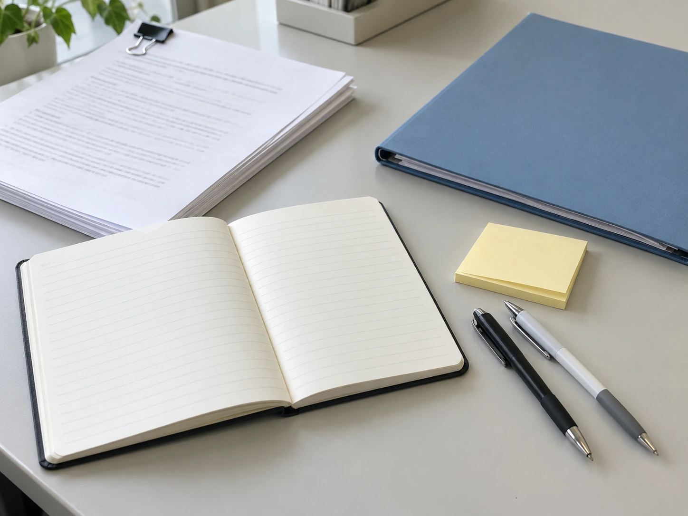

FEATURE
本部の仕事道具――紙のメモはまだ現役？
デジタル化が進む本部で、職員が日々使っている道具を紹介します。
事件データベースや共有システムを使う機会が増えた一方で、本部では紙のメモ、付箋、ホワイトボードなども今なお使われています。今回は、職員が普段どのように道具を使い分けているのか聞きました。
机の上を見せてもらうと、使い込まれたノートの横にパソコンが置かれていたり、画面の端に短い付箋が貼られていたり。紙とデジタルの道具が、同じ机の上で使われている様子が見えてきました。

その場で書くなら紙が早いことも
電話で情報提供を受けている最中や、複数人で資料を見ながら確認しているときは、まず紙へ簡単に書き留め、後から正式な記録へ入力することがあります。ただし、紙だけで記録を完結させることはありません。
メモでは、時刻や聞き取った言葉を書き留めるほか、場所の位置関係を簡単な図にすることもあります。文章をきれいに整えるより、会話の流れを止めずに必要な情報を残すことを優先します。
「電話中は、すぐに書けるほうが助かることがあります。使い終わったら、その日のうちに内容を整理します。自分の字でも、時間がたつと読みにくくなることがありますから（笑）」
付箋は、短い確認事項の置き場所
付箋には、資料の確認箇所や、後で尋ねたいことを短く書きます。資料の本文へ直接書き込まずに、必要な箇所を一時的に示せる点も便利です。誰かに渡すときは、その印が何を意味するかも伝えます。
「付箋を貼るだけで作業が終わった気にならないようにしています。確認が済んだら外す。残っているものは、まだ何を確認しているのか見直す。そのための目印ですね」
ホワイトボードは「考える場所」
事件の時系列や関係者を整理するときには、ホワイトボードへ一時的に書き出すこともあります。確認が終わった内容は所定の記録へ反映し、不要になった書き込みは消去します。
複数の資料を見比べる場面では、出来事の順番を書き、関係する情報を横に並べます。書いた内容を参加者が一緒に見ながら、日付や関係の捉え方に違いがないか確認します。
「口頭だけでは、同じ説明を聞いても違うことを想像している場合があります。一度書いてみると、『そこはまだ未確認です』と話しやすくなります」
道具の状態を確かめるのも準備のうち
ペンのインクが切れていたり、ボードの文字が薄かったりすると、確認の流れが止まってしまいます。打ち合わせの前に筆記具をそろえる、使った道具を元の場所へ戻すといった、小さな準備も日々の仕事に含まれます。
資料を持って移動する際にはクリップやファイルを使い、ページが混ざらないようにまとめます。目立つ道具ではありませんが、確認したい資料をすぐ取り出せるようにするための工夫です。
人によって少しずつ違う
細いペンを好む人、付箋を大量に使う人、何でもすぐ入力する人など、やり方はさまざまです。ただし、最終的な事件記録は共通のルールに従って残します。
ノートを取る職員からは、「薄くて開きやすいものが好き」「同じ種類のペンを予備も含めて使っている」といった話も聞かれました。一方で、机に物を増やしたくないので、確認事項をすぐに画面へ入力するという職員もいます。
最後は、ほかの担当者にも伝わる記録へ
紙のメモやボードは、その場の確認を助ける道具です。正式な記録へ転記する際には、内容を見直し、誰が読んでも確認結果が分かる形に整えます。使用後のメモ類も、情報の取扱いに関するルールに従って管理します。
「自分に使いやすい道具は人それぞれですが、後で読む人のことは共通して考えています。急いで書いたメモを、次の人へそのまま渡して終わりにはしないようにしています」
紙の道具も、デジタルの仕組みも、場面に応じて使い分ける。本部の机の上では、今もさまざまな道具が仕事を支えています。